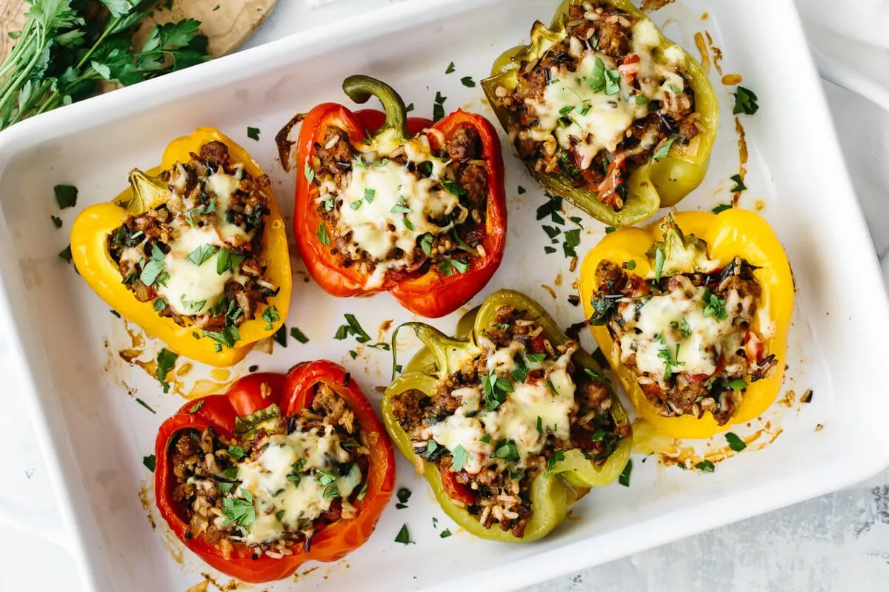

Stuffed Bell Peppers

Description
This Bolognese filling is spicy, meaty, and creamy. If you're in a hurry you can serve it over pasta instead of filling the peppers; just omit the rice or orzo.
Ingredients
- 1/2 cup cooked rice
- 2 tablespoons olive oil, divided
- 1/8 cup minced carrots
- 1/8 cup celery
- 6 bell peppers (any color)
- 1/2 pound ground beef
- 1/4 pound pancetta or lightly smoked bacon, diced
- 1 1/2 cup prepared marinara sauce
- 1/4 cup red wine
- 1/2 teaspoon red pepper flakes
- 1/3 cup heavy cream
- 1/2 grated parmesan cheese, divided
Directions
- Preheat oven to 375 degrees F (190 degrees C).
- Heat 1 tablespoon olive oil in a skillet over medium heat. Stir in the carrots and celery; cook and stir until the vegetables are tender, about 5 minutes.
- Stir in ground beef and pancetta, and cook until browned and crumbled; drain off any excess liquid, and return to heat. Add marinara sauce, wine, and red pepper flakes, and simmer for 10 minutes. Stir in cream, half of the Parmesan cheese, and rice. Simmer 5 minutes more, or until most liquid has absorbed.
- Place peppers in a shallow baking dish, and fill with beef mixture. Drizzle with remaining olive oil and top with remaining Parmesan cheese.
- Bake, uncovered, for 30 minutes in the preheated oven. Serve hot.
Home
Top